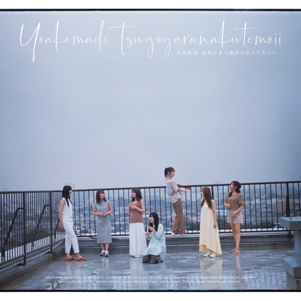
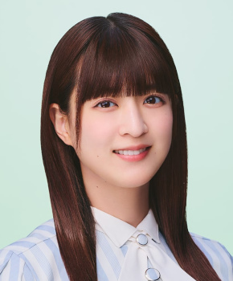

〜Do my best〜じゃ意味はないどぅーまいべすとじゃいみはない

初収録リリース「夜明けまで強がらなくてもいい」のジャケット
乃木坂46
発売日：2019-09-04
収録：夜明けまで強がらなくてもいい（24thSG）
種別：アンダー曲
センター：岩本蓮加
作曲：APAZZI、浦島健太
編曲：APAZZI、浦島健太
ライブ披露：39件
フォーメーション
上が後列、下が前列です。色付きがセンター。（参考データに基づく）
中村麗乃
和田まあや
向井葉月

吉田綾乃クリスティー佐々木琴子
伊藤純奈
中田花奈
阪口珠美
伊藤理々杏
 山崎怜奈
山崎怜奈佐藤楓
鈴木絢音
樋口日奈
岩本蓮加
渡辺みり愛
寺田蘭世
参加メンバー（16名）
中田花奈、樋口日奈、和田まあや、伊藤純奈、佐々木琴子、鈴木絢音、寺田蘭世、山崎怜奈、渡辺みり愛、伊藤理々杏、岩本蓮加、阪口珠美、佐藤楓、中村麗乃、向井葉月、吉田綾乃クリスティー
この曲が披露されたライブ（39件）
新しい順に20件まで表示しています（全39件）。
同じリリースの曲
夜明けまで強がらなくてもいい、僕のこと、知ってる？、路面電車の街、図書室の君へ、時々 思い出してください、〜Do my best〜じゃ意味はない、僕の思い込み